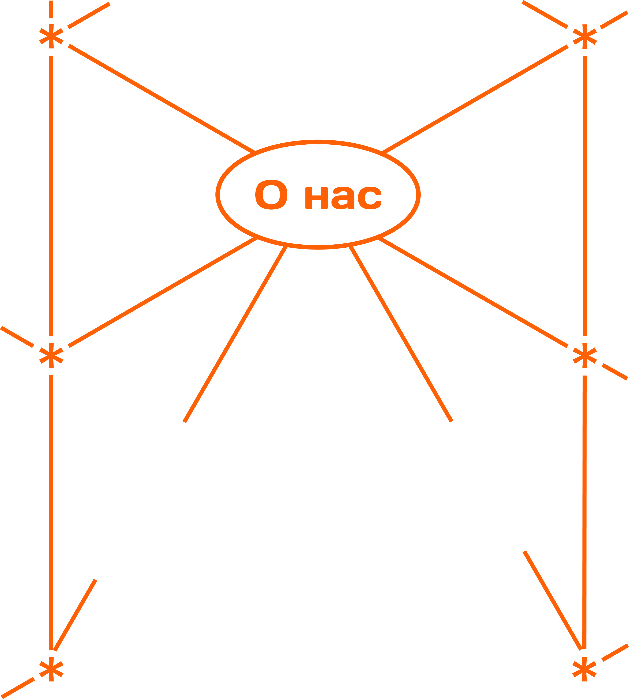
Для нас скалолазание — это не просто спорт и не просто способ провести свободное время. Это возможность прожить целый спектр эмоций через движение. Каждый маршрут становится небольшим путешествием, в котором есть сомнение и уверенность, напряжение и облегчение, страх и азарт. Здесь важно не только достичь вершины, но и почувствовать всё, что происходит по пути к ней.
Мы живём в мире, где почти всё внимание направлено наружу. Работа, учёба, бесконечные уведомления, встречи и задачи постепенно превращают дни в повторяющийся маршрут. В этой постоянной спешке становится всё сложнее замечать собственные эмоции, чувствовать момент и получать новые впечатления. “СДВИЖ*” появился из идеи вернуть человеку это ощущение.
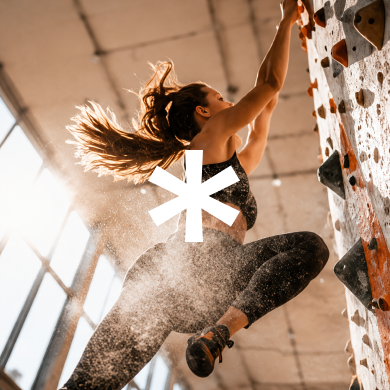
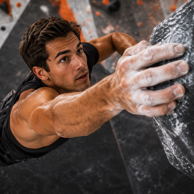
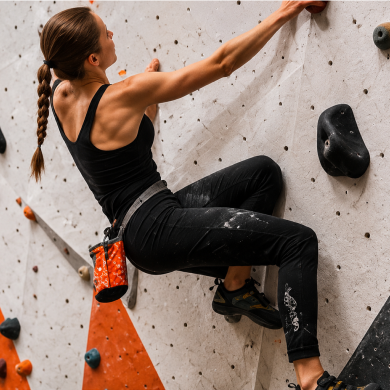
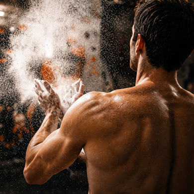
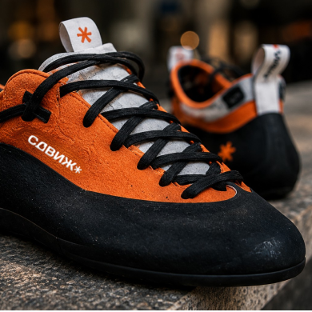
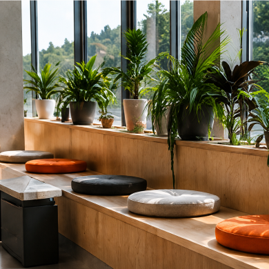
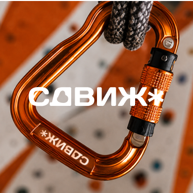
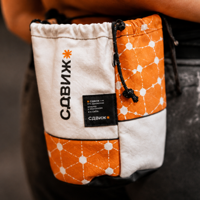
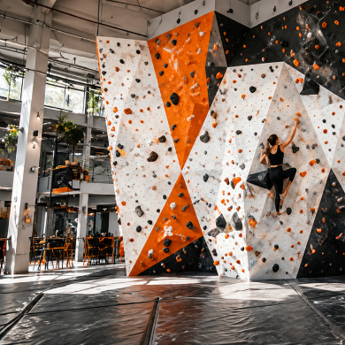
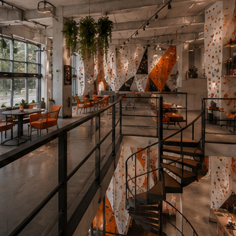
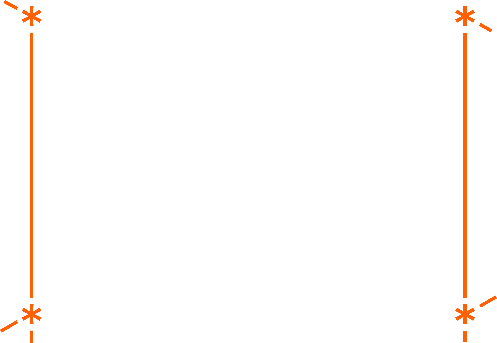
Каждая трасса предлагает свой опыт. Одни маршруты требуют спокойствия и сосредоточенности, другие заставляют действовать решительно и быстро. Где-то приходится доверять себе, а где-то выходить за пределы привычного. Благодаря этому каждый посетитель проходит собственный путь и получает уникальный эмоциональный опыт.
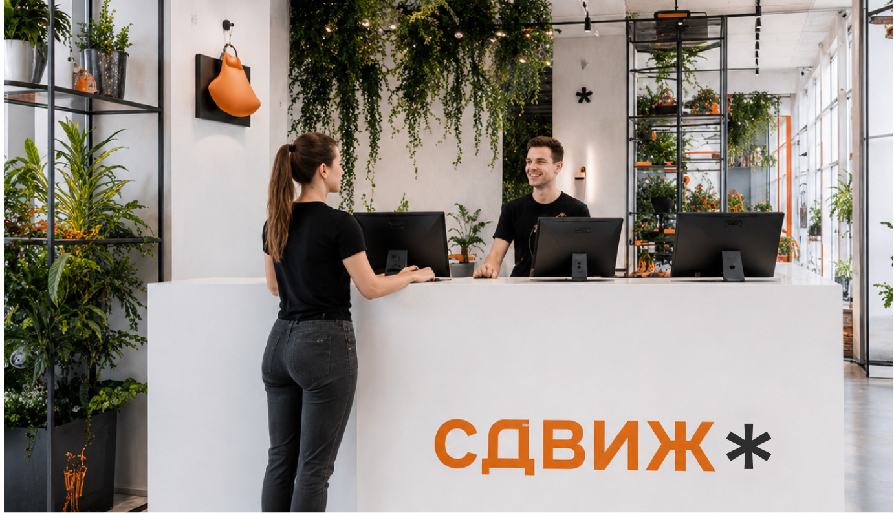
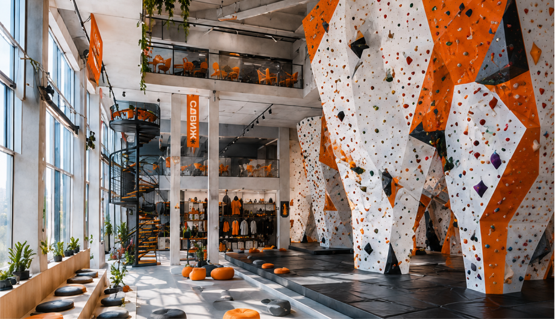
В основе нашего подхода лежит идея о том, что эмоции — это не конечная цель, а процесс. Они постоянно меняются, развиваются и помогают человеку лучше понимать себя. Мы создаём пространство, в котором можно отвлечься от повседневной рутины, переключить внимание, почувствовать своё тело и заново открыть для себя радость движения.
Наш скалодром — это место для тех, кто ищет не только физическую активность, но и новые ощущения. Для тех, кто хочет выйти из привычного ритма, испытать себя, прожить яркие эмоции и почувствовать, что движение вверх начинается гораздо раньше, чем человек делает первый шаг на стену.
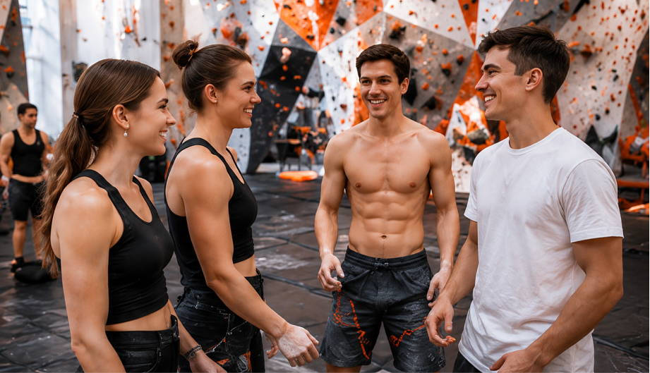